总述：
大部分3D编程都涉及到地面元素，在场景中我们使用地面作为其他物体的承载基础，同时也用地面限制场景使用者的移动范围，还可以通过设置地块的属性为场景的不同位置设置对应的计算规则。本文在WebGL平台上借助Babylon.js库探索并实现了两种地面构造方法，除了两种确定的构造方法外，本文还包含了对一些其他选择的探讨和一些对电子游戏艺术的看法。建议在阅读本文前，先学习3D编程入门知识和Babylon.js的官方入门教程，前者可以在 https://space.bilibili.com/25346426/channel/detail?cid=14552找到一些介绍基础概念的视频教程，后者可以在https://github.com/ljzc002/ljzc002.github.io/tree/master/BABYLON101找到英中对照版本，本篇文章所用到的代码可以在https://github.com/ljzc002/ljzc002.github.io/tree/master/EmptyTalk下载。
一、方法一——使用标准地块拼装构造地面
1、我们先制作5种标准地块：
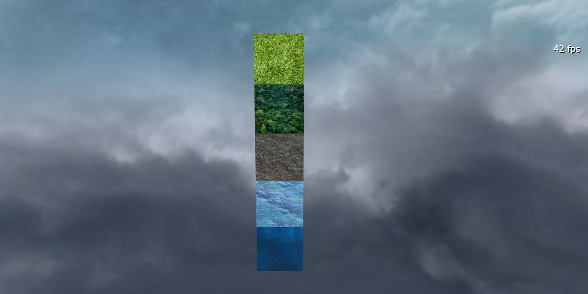
标准地块都是边长为1的正方体，每一种标准地块使用对应的纹理表示特定的地貌，我们可以用这些标准地块的复制体拼接成复杂的地面构造。在本文中我使用正方体作为标准地块，垂直排布的生成地形，你也可以使用六棱柱等其他形状作为标准地块，或者将地块绕y轴旋转一些角度后进行排布。
制作标准地块的代码如下：
1 var size_per=1;//每个单元格的尺寸
2 var obj_landtype={};
3 //建立网格
4 var box_grass=new BABYLON.MeshBuilder.CreateBox("box_grass",{size:size_per},scene);
5 var box_tree=new BABYLON.MeshBuilder.CreateBox("box_tree",{size:size_per},scene);
6 var box_stone=new BABYLON.MeshBuilder.CreateBox("box_stone",{size:size_per},scene);
7 var box_shallowwater=new BABYLON.MeshBuilder.CreateBox("box_shallowwater",{size:size_per},scene);
8 var box_deepwater=new BABYLON.MeshBuilder.CreateBox("box_deepwater",{size:size_per},scene);
9 box_grass.renderingGroupId = 2;
10 box_tree.renderingGroupId = 2;
11 box_stone.renderingGroupId = 2;
12 box_shallowwater.renderingGroupId = 2;
13 box_deepwater.renderingGroupId = 2;
14 box_grass.position.y=-100*size_per;
15 box_tree.position.y=-101*size_per;
16 box_stone.position.y=-102*size_per;
17 box_shallowwater.position.y=-103*size_per;
18 box_deepwater.position.y=-104*size_per;
19 obj_landtype.box_grass=box_grass;
20 obj_landtype.box_tree=box_tree;
21 obj_landtype.box_stone=box_stone;
22 obj_landtype.box_shallowwater=box_shallowwater;
23 obj_landtype.box_deepwater=box_deepwater;
24 OptimizeMesh(box_grass);
25 OptimizeMesh(box_tree);
26 OptimizeMesh(box_stone);
27 OptimizeMesh(box_shallowwater);
28 OptimizeMesh(box_deepwater);
29 //建立材质
30 var mat_grass = new BABYLON.StandardMaterial("mat_grass", scene);//1
31 mat_grass.diffuseTexture = new BABYLON.Texture("../../ASSETS/IMAGE/LANDTYPE/grass.jpg", scene);
32 mat_grass.freeze();
33 box_grass.material=mat_grass;
34 var mat_tree = new BABYLON.StandardMaterial("mat_tree", scene);//1
35 mat_tree.diffuseTexture = new BABYLON.Texture("../../ASSETS/IMAGE/LANDTYPE/yulin.png", scene);
36 mat_tree.freeze();
37 box_tree.material=mat_tree;
38 var mat_stone = new BABYLON.StandardMaterial("mat_stone", scene);//1
39 mat_stone.diffuseTexture = new BABYLON.Texture("../../ASSETS/IMAGE/LANDTYPE/stone.png", scene);
40 mat_stone.freeze();
41 box_stone.material=mat_stone;
42 var mat_shallowwater = new BABYLON.StandardMaterial("mat_shallowwater", scene);//1
43 mat_shallowwater.diffuseTexture = new BABYLON.Texture("../../ASSETS/IMAGE/LANDTYPE/lake.png", scene);
44 mat_shallowwater.freeze();
45 box_shallowwater.material=mat_shallowwater;
46 var mat_deepwater = new BABYLON.StandardMaterial("mat_deepwater", scene);//1
47 mat_deepwater.diffuseTexture = new BABYLON.Texture("../../ASSETS/IMAGE/LANDTYPE/sea.png", scene);
48 mat_deepwater.freeze();
49 box_deepwater.material=mat_deepwater; 这段代码制作了“草地”、“森林”、“岩石”、“浅水”、“深水”五种标准地块，对于地块的网格，使用OptimizeMesh方法进行了一些显示优化，OptimizeMesh方法内容如下：
1 function OptimizeMesh(mesh)
2 {
3 mesh.convertToFlatShadedMesh();//使用顶点颜色计算代替片元颜色计算
4 mesh.freezeWorldMatrix();//冻结世界坐标系
5 // mesh.material.needDepthPrePass = true;//启用深度预通过
6 //mesh.convertToUnIndexedMesh();//使用三角形绘制代替索引绘制
7 }对于地块材质，使用freeze方法冻结了材质对象的属性，避免渲染引擎频繁刷新材质状态。
2、接下来我们用草地地块拼接一个最简单的平原地形
地形渲染效果如下：
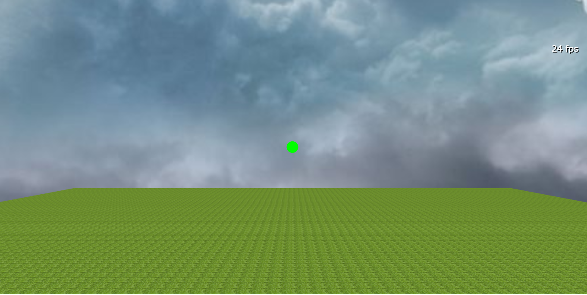
这片草原是由10201个草地地块拼接而成的，这里我使用了OpenGL的“多实例渲染”技术，来降低绘制大量重复对象对计算性能的消耗，Babylon.js库在createInstance方法中封装了这一技术：
1 var arr_instance=[];
2 var segs_x=100;//横向分段次数
3 var segs_y=100;//纵向分段次数
4
5 //以高度0为海平面，以xy00为大地原点
6 //形成初始地块:101*101个格子，中心格的中心是原点
7 for(var i=0;i<=segs_x;i++)
8 {
9 arr_instance[i]=[];
10 for(var j=0;j<=segs_y;j++)
11 {
12 arr_instance[i][j]=[];
13 var instance=obj_landtype.box_grass.createInstance("ground_"+i+"_"+j+"_0");
14 instance.mydata={i:i,j:j,k:0,landclass:obj_landtype.box_grass};
15 instance.position=new BABYLON.Vector3((i-(segs_x/2))*size_per,0,(j-(segs_y/2))*size_per);//xz方向上都是从负向正堆叠
16 arr_instance[i][j].push(instance);//把每个实例用全局对象保存起来
17 }
18 }这里我们为每个实例对象设置了一个mydata属性，将地块的一些信息保存到这个属性里，以备之后的场景交互使用。
3、为单元格标记xz方向上的索引
现在每个地块都是沿着x轴和z轴整齐排列的，为方便区分，我们将xz平面上的每个方块位置叫做“单元格”，每个单元格中可能有多个地块实例。每个单元格的位置以其x、z轴上的索引表示，我们现在需要一种方式将这一索引值显示出来。
这里我们先尝试为每个单元格显示一个索引文本，渲染效果如下：（可以访问https://ljzc002.github.io/EmptyTalk/HTML/TEST/testfloor.html查看）
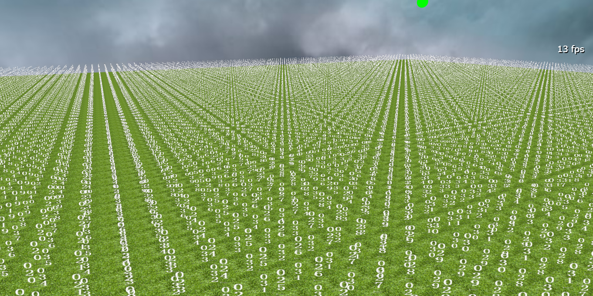
可以看出标记效果并不是很理想，同时数以万计的索引文本也降低了场景的渲染速度，这种方法可能并不适用于当前的单元格标记需求，但包含的技术可能用在其他地方：
a、首先建立一个精灵管理器以及一张包含数字和减号的图片
1 //准备十种数字以及减号的纹理
2 var can_temp=document.createElement("canvas");
3 can_temp.width=132//264;
4 can_temp.height=24;
5 var context=can_temp.getContext("2d");
6 context.fillStyle="rgba(0,0,0,0)";//完全透明的背景
7 context.fillRect(0,0,can_temp.width,can_temp.height);
8 context.fillStyle = "#ffffff";
9 context.font = "bold 24px monospace";
10 for(var i=0;i<10;i++)
11 {
12 context.fillText(i,i*12,24);
13 }
14 context.fillText("-",120,24);
15 //context.fillText("0123456789-",0,24);//默认为半角，为了在作为精灵使用时整齐的分块必须一个一个单独绘制
16 var png=can_temp.toDataURL("image/png");//生成PNG图片
17 //建立精灵管理器
18 var spriteManager = new BABYLON.SpriteManager("spriteManager", png, (segs_x+1)*(segs_y+1)*7, 24, scene);
19 spriteManager.renderingGroupId=2;
20 spriteManager.cellWidth=12;
21 spriteManager.cellHeight=24;b、在生成地块实例的循环里加入精灵生成代码：
1 //添加精灵，估计地图最大为1000*1000
2 var number1 = new BABYLON.Sprite("number1", spriteManager);
3 var number2 = new BABYLON.Sprite("number2", spriteManager);
4 var number3 = new BABYLON.Sprite("number3", spriteManager);
5 var number4 = new BABYLON.Sprite("number4", spriteManager);
6 var number5 = new BABYLON.Sprite("number5", spriteManager);
7 var number6 = new BABYLON.Sprite("number6", spriteManager);
8 var number7 = new BABYLON.Sprite("number7", spriteManager);
9 //为缺少的数位填充0，生成三位数字
10 stri=(i+1000+"").substr(1);
11 strj=(j+1000+"").substr(1);
12
13 number1.cellIndex=parseInt(stri[0]);
14 number2.cellIndex=parseInt(stri[1]);
15 number3.cellIndex=parseInt(stri[2]);
16 number4.cellIndex=10;//减号
17 number5.cellIndex=parseInt(strj[0]);
18 number6.cellIndex=parseInt(strj[1]);
19 number7.cellIndex=parseInt(strj[2]);
20 //定位精灵，7个精灵垂直排列作为一条文本
21 number1.size=0.2*size_per;
22 number1.position=instance.position.clone();
23 number1.position.y=2*size_per;
24 number1.position.x+=0.3*size_per;
25 number1.position.z+=0.3*size_per;
26
27 number2.size=0.2*size_per;
28 number2.position=instance.position.clone();
29 number2.position.y=1.8*size_per;
30 number2.position.x+=0.3*size_per;
31 number2.position.z+=0.3*size_per;
32 number3.size=0.2*size_per;
33 number3.position=instance.position.clone();
34 number3.position.y=1.6*size_per;
35 number3.position.x+=0.3*size_per;
36 number3.position.z+=0.3*size_per;
37 number4.size=0.2*size_per;
38 number4.position=instance.position.clone();
39 number4.position.y=1.4*size_per;
40 number4.position.x+=0.3*size_per;
41 number4.position.z+=0.3*size_per;
42 number5.size=0.2*size_per;
43 number5.position=instance.position.clone();
44 number5.position.y=1.2*size_per;
45 number5.position.x+=0.3*size_per;
46 number5.position.z+=0.3*size_per;
47 number6.size=0.2*size_per;
48 number6.position=instance.position.clone();
49 number6.position.y=1.0*size_per;
50 number6.position.x+=0.3*size_per;
51 number6.position.z+=0.3*size_per;
52 number7.size=0.2*size_per;
53 number7.position=instance.position.clone();
54 number7.position.y=0.8*size_per;
55 number7.position.x+=0.3*size_per;
56 number7.position.z+=0.3*size_per;考虑到计算性能，这里使用精灵作为文本的载体（但建立了7万多个精灵之后，帧率还是降低了很多），因为水平排列的精灵在相机水平移动时会相互遮挡，所以垂直排列精灵来降低影响，也许可以通过重设精灵的旋转轴位置来彻底解决这一问题。
除了为每个地块标注索引之外，我们还可以使用带有索引的小地图、在单独的视口中显示选定地块的特写、在选定地块旁边生成标记等等方式来标明地块的索引，后文将使用在场景中放置参考物的方式来标示地块索引。
4、生成地形起伏
我们抬升了xz平面中左下角的两格单元格，并将这两个单元设为“岩石”地貌：
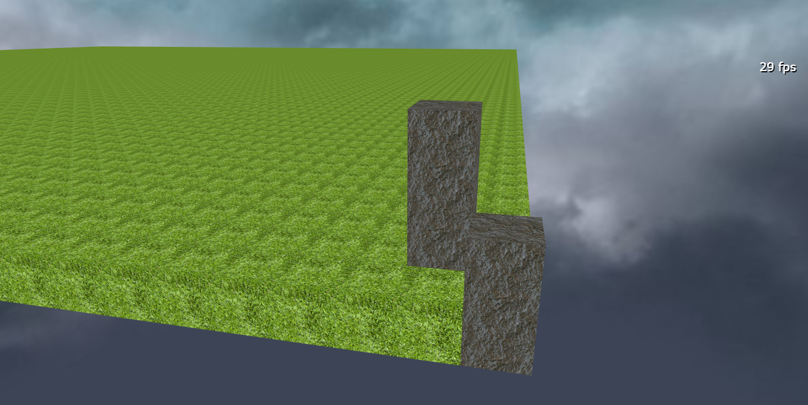
a、首先建立两个工具方法：
1 //disposeCube(0,0)
2 function disposeCube(i,j)//移除一个xz位置上的所有可能存在的方块
3 {
4 var len=arr_instance[i][j].length;
5 for(var k=0;k<len;k++)
6 {
7 var instance=arr_instance[i][j][k];
8 instance.dispose();
9 instance=null;
10 }
11
12 }
13 //在指定单元格、指定高度建立指定类型的地块
14 //createCube(0,0,2,obj_landtype.box_stone)
15 //i，j必定是整数，k可能是小数,都表示单位长度的数量
16 function createCube(i,j,k,landclass)
17 {
18 var instance=landclass.createInstance("ground_"+i+"_"+j+"_"+k);
19 instance.mydata={i:i,j:j,k:k,landclass:landclass};
20 instance.position=new BABYLON.Vector3((i-(segs_x/2))*size_per,k*size_per,(j-(segs_y/2))*size_per);//都是从负向正堆叠？-》规定每个单元格的地块数组都是从低到高排列
21 //arr_instance[i][j].push(instance);
22 arr_instance[i][j].unshift(instance);
23 }b、接下来修改一些被选中的单元格
我们把“被选中的单元格”放在一个数组里，将这个数组命名为“配置数组”。
1 //用对应的方块填充一条路径上所有的xz单元格，先清空单元格内原有方块，然后在指定高度建立一个方块
2 // ，接着比对所有周围方块的高度（比对四个方向），填补漏出的部分，在填补时注意越低的方块在数组中越靠前。
3 //createCubePath([{i:0,j:0,k:1,landclass:obj_landtype.box_stone},{i:1,j:1,k:2.5,landclass:obj_landtype.box_stone}])
4
5 function createCubePath(cubepath)
6 {
7 var len=cubepath.length;
8 for(var i=0;i<len;i++)//对于每一个xz单元格
9 {
10 var cube=cubepath[i];
11 disposeCube(cube.i,cube.j);
12 createCube(cube.i,cube.j,cube.k,cube.landclass);
13 }
14 //初次绘制后进行二次对比，初次绘制的必定是xz单元格中的最高点
15 for(var index=0;index<len;index++)
16 {
17 var cube=cubepath[index];
18 var i=cube.i;
19 var j=cube.j;
20 var k=cube.k;
21 //上右下左
22 //取四方的最高
23 var k1=999;
24 if(arr_instance[i])
25 {
26 var arr1=arr_instance[i][j+1];
27 if(arr1)
28 {
29 var ins_cube1=arr1[arr1.length-1];
30 k1=ins_cube1.mydata.k;
31 }
32 }
33 var k2=999;
34 if(arr_instance[i+1])
35 {
36 var arr2=arr_instance[i+1][j];
37 if(arr2) {
38 var ins_cube2 = arr2[arr2.length - 1];
39 k2=ins_cube2.mydata.k;
40 }
41 }
42 var k3=999;
43 if(arr_instance[i])
44 {
45 var arr3=arr_instance[i][j-1];
46 if(arr3) {
47 var ins_cube3=arr3[arr3.length-1];
48 k3=ins_cube3.mydata.k;
49 }
50 }
51 var k4=999;
52 if(arr_instance[i-1])
53 {
54 var arr4=arr_instance[i-1][j+1];
55 if(arr4) {
56 var ins_cube4=arr4[arr4.length-1];
57 k4=ins_cube4.mydata.k;
58 }
59 }
60
61 //在四方最高中找最低
62 var mink=Math.min(k1,k2,k3,k4);
63
64 var len2=Math.floor((k-mink)/size_per);
65 for(var index2=1;index2<=len2;index2++)
66 {
67 createCube(i,j,k-index2,cube.landclass);
68 //arr_instance[i][j].unshift()
69 }
70 }
71 }这段代码包含两个循环，第一个循环负责放置选中单元格中最高的那个地块，第二个循环则负责填充最高地块下面的支撑，比如高山的山体或者深谷的谷壁。这种填充是靠比较选中的单元格和四面单元格的高度实现的，这个算法的一个缺点是在需要生成低谷时，谷地周围的一圈高度不变的平地也需要放入配置数组，否则地形会出现断裂。
直接在浏览器控制台中执行createCubePath([{i:0,j:0,k:1,landclass:obj_landtype.box_stone},{i:1,j:1,k:2.5,landclass:obj_landtype.box_stone}])命令即可改变地形。这里你可能想要看到那种“在场景中拖动鼠标地形随之起伏”的效果，但我认为这种运行时代码注入的控制方式反而是WebGL技术相对于传统桌面3D程序的一大优势，借此我们可能实现远超传统ui的精细化控制。
可以访问https://ljzc002.github.io/EmptyTalk/HTML/TEST/testfloor2.html进行测试
5、小结
综上我们编写了一个简单的地形生成方法，但还有更多的工作没有做，我们需要一些根据某种规则生成配置数组的方法、一些根据规则在同一单元格的不同高度分配不同地块的方法（关于地形规则的制定也许可以参考这篇随机生成行星表面地形的文章https://www.cnblogs.com/ljzc002/p/9134272.html），对于不习惯控制台输入的使用者还要考虑编写实用的交互ui。这种空间上离散的地形比较适合编写时间上离散的回合制3D场景，接下来我们将要讨论更适合即时3D场景的连续地形。
二、第二种方法——改进的地面网格
1、Babylon.js内置地面网格的不足
Babylon.js内置了一种平面地面网格和一种高度图地面网格，但这两钟网格存在一些不足：
甲：只能设置相同的x向分段数和z向分段数
乙：地面网格里没有xz索引信息，只能通过修改底层顶点位置改变地形
丙：无法表现垂直断崖和反斜面之类变化剧烈的地形
详细解释一下问题丙，地面网格的顶点排布如下图所示：
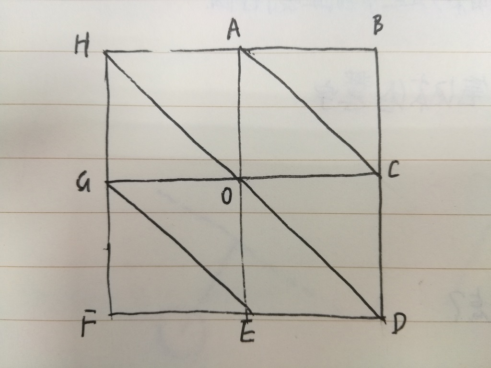
使用者将发现他无法在HAOG单元格和ABCO单元格之间生成垂直断崖，因为地面网格使用的是“简化的网格”，在AO两处都各只有一个顶点，无法表现悬崖的上下两边，这时使用者只好使用尽量小的单元格生成尽量陡的斜坡来模拟悬崖（这一点正好和无法生成斜坡的地块拼接法完全相反）。另一方面，每个顶点（比如顶点O）周围的六条楞线夹角并不均匀，难以生成端正的形状。
计划用“条带网格”替换地面网格来解决问题甲和问题乙，但条带网格的顶点排布规律与地面网格类似，问题丙仍然存在。
经过观察，问题丙只在地形变化剧烈时表现明显，所以决定用条带网格表现较为平缓的地形大势（代码里命名为ground_base），把一些专门定制的“地形附着物网格”（也就是模型）放置在ground_base之上表现剧烈变化的地形，如果需要，再使用某种方式将ground_base与地形附着物融合在一起。
2、生成类似方法一的平坦草原地形，并标注xz索引
渲染效果如下：（可以访问https://ljzc002.github.io/EmptyTalk/HTML/TEST/testframe2.html查看效果）
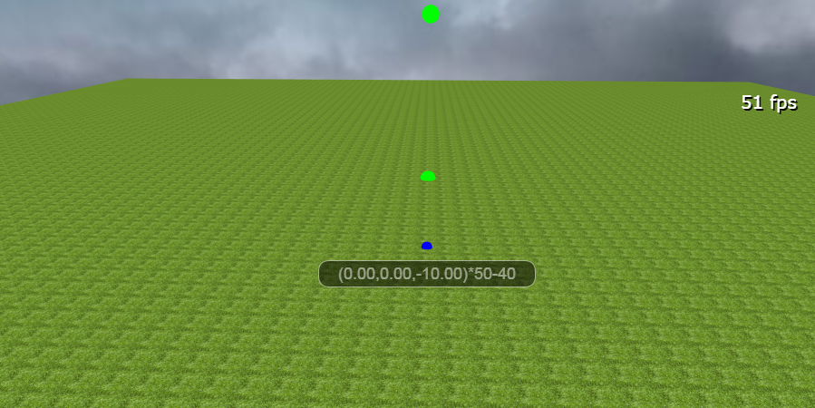
括号中是当前指示物坐标，括号后是xz索引值
a、设置纹理重复
与地块拼接法不同，条带网默认用一张纹理图包覆全体顶点，为了能像方法一一样一格一格的显示地块，对地块材质代码做如下修改：
1 mat_grass = new BABYLON.StandardMaterial("mat_grass", scene);//1
2 mat_grass.diffuseTexture = new BABYLON.Texture("../../ASSETS/IMAGE/LANDTYPE/grass.jpg", scene);
3 mat_grass.diffuseTexture.uScale = segs_x+1;//纹理重复效果
4 mat_grass.diffuseTexture.vScale = segs_z+1;
5 mat_grass.freeze();b、生成条带网格地面
1 var arr_path=[];//路径数组
2 for(var i=0;i<=segs_x+1;i++)
3 {
4 var posx=(i-((segs_x+1)/2))*size_per;
5 var path=[];
6 for(var j=0;j<=segs_z+1;j++)
7 {
8 var posz=(j-((segs_z+1)/2))*size_per;
9 path.push(new BABYLON.Vector3(posx,0,posz));
10 }
11 arr_path.push(path);
12 }
13 ground_base=BABYLON.MeshBuilder.CreateRibbon("ground_base"
14 ,{pathArray:arr_path,updatable:true,closePath:false,closeArray:false,sideOrientation:BABYLON.Mesh.DOUBLESIDE});
15 ground_base.sideOrientation=BABYLON.Mesh.DOUBLESIDE;
16 ground_base.material=mat_grass;
17 ground_base.renderingGroupId=2;
18 ground_base.metadata={};
19 ground_base.metadata.arr_path=arr_path;
20 obj_ground.ground_base=ground_base;注意需要把CreateRibbon方法参数中的updatable属性设为true，否则建立条带网格之后将不能修改地形。
c、制作一些蓝色小球作为地形参照物：
1 //5个蓝色小球
2 var mesh_sphereup=new BABYLON.MeshBuilder.CreateSphere("mesh_sphereup",{diameter:0.5},scene);
3 mesh_sphereup.material=mat_blue;
4 mesh_sphereup.renderingGroupId=2;
5 mesh_sphereup.direction=new BABYLON.Vector3(0,-1,2);
6 mesh_sphereup.isPickable=false;
7 mesh_sphereup.rayHelper = null;
8 obj_plane.mesh_sphereup=mesh_sphereup;
9 var mesh_sphereright=new BABYLON.MeshBuilder.CreateSphere("mesh_sphereright",{diameter:0.5},scene);
10 mesh_sphereright.material=mat_blue;
11 mesh_sphereright.renderingGroupId=2;
12 mesh_sphereright.direction=new BABYLON.Vector3(2,-1,0);
13 mesh_sphereright.isPickable=false;
14 mesh_sphereright.rayHelper = null;
15 obj_plane.mesh_sphereright=mesh_sphereright;
16 var mesh_spheredown=new BABYLON.MeshBuilder.CreateSphere("mesh_spheredown",{diameter:0.5},scene);
17 mesh_spheredown.material=mat_blue;
18 mesh_spheredown.renderingGroupId=2;
19 mesh_spheredown.direction=new BABYLON.Vector3(0,-1,-2);
20 mesh_spheredown.isPickable=false;
21 mesh_spheredown.rayHelper = null;
22 obj_plane.mesh_spheredown=mesh_spheredown;
23 var mesh_sphereleft=new BABYLON.MeshBuilder.CreateSphere("mesh_sphereleft",{diameter:0.5},scene);
24 mesh_sphereleft.material=mat_blue;
25 mesh_sphereleft.renderingGroupId=2;
26 mesh_sphereleft.direction=new BABYLON.Vector3(-2,-1,0);
27 mesh_sphereleft.isPickable=false;
28 mesh_sphereleft.rayHelper = null;
29 obj_plane.mesh_sphereleft=mesh_sphereleft;
30 var mesh_spheremiddle=new BABYLON.MeshBuilder.CreateSphere("mesh_spheremiddle",{diameter:0.5},scene);
31 mesh_spheremiddle.material=mat_blue;
32 mesh_spheremiddle.renderingGroupId=2;
33 mesh_spheremiddle.direction=new BABYLON.Vector3(0,-1,0);
34 mesh_spheremiddle.isPickable=false;
35 mesh_spheremiddle.rayHelper = null;
36 obj_plane.mesh_spheremiddle=mesh_spheremiddle;
37 //为每个小球绑定一个gui标签
38 for(var key in obj_plane)
39 {
40 var label = new BABYLON.GUI.Rectangle(key);
41 label.background = "black";
42 label.height = "30px";
43 label.alpha = 0.5;
44 label.width = "240px";
45 label.cornerRadius = 20;
46 label.thickness = 1;
47 label.linkOffsetY = 30;//位置偏移量？？
48 fsUI.addControl(label);
49 label.linkWithMesh(obj_plane[key]);
50 var text1 = new BABYLON.GUI.TextBlock();
51 text1.text = "";
52 text1.color = "white";
53 label.addControl(text1);
54 label.isVisible=true;
55 //label.layerMask=2;
56 label.text=text1;
57 obj_plane[key].lab=label;
58 }可以访问https://www.cnblogs.com/ljzc002/p/7699162.html 查看Babylon.js gui功能的中文文档
d、根据相机的位置修改路标的位置：
1 scene.registerAfterRender(
2 function() {
3 //更新5个标记球的位置
4 var origin=camera0.position;
5 var length=200;
6 for(key in obj_plane)
7 {
8 var mesh=obj_plane[key];
9 var direction=mesh.direction;
10 var ray = new BABYLON.Ray(origin, direction, length);
11 /*if(mesh.rayHelper)
12 {
13 mesh.rayHelper.dispose();
14 }*/
15 //mesh.rayHelper = new BABYLON.RayHelper(ray);//这时还没有_renderLine属性
16 //mesh.rayHelper._renderLine.renderingGroupId=2;
17 //mesh.rayHelper.show(scene);//连续使用两次show会崩溃？
18 //难道一帧里只能用一个pick？
19 //console.log(key);
20 var hit = scene.pickWithRay(ray,predicate);
21 if (hit.pickedMesh){
22 //console.log(key+"2");
23 mesh.isVisible=true;
24 var posp=hit.pickedPoint;
25 mesh.position=posp.clone();
26 mesh.lab.isVisible=true;
27 //显示命中点的坐标以及命中点所在方块的左下角的两层索引
28 var index_x=Math.floor((posp.x+(segs_x+1)*size_per/2)/size_per);
29 var index_z=Math.floor((posp.z+(segs_z+1)*size_per/2)/size_per);
30 mesh.lab.text.text="("+posp.x.toFixed(2)+","+posp.y.toFixed(2)+","+posp.z.toFixed(2)+")*"
31 +index_x+"-"+index_z;
32 }
33 else
34 {//如果没命中地面则不显示路标
35 mesh.lab.isVisible=false;
36 mesh.isVisible=false;
37 }
38 }
39
40
41
42 }
43 )
44 function predicate(mesh){//过滤网格，只允许射线击中地面系网格，
45 if (mesh.name.substr(0,6)=="ground"){
46 return true;
47 }
48 else
49 {
50 return false;
51 }
52
53 }这段代码在每次渲染后执行，从相机出发向五个方位发射5条射线，将射线和地面的交点做为路标放置点，同时修改gui文本内容。曾经尝试在这里使用RayHelper功能显示射线，但发现在未渲染前RayHelper无法设置渲染组，而渲染后的RayHelper又需立刻换成新对象，旧的渲染组属性作废，希望官方能够优化rayHelper的用法，如果确实需要显示射线，也许可以用Line功能代替rayHelper。
e、对一些选定的顶点施加矩阵变化：
在控制台中执行TransVertex(obj_ground.ground_base,[[0,0],[0,1],[1,0]],BABYLON.Matrix.Translation(0,2,0))抬起了左下角的三个顶点：
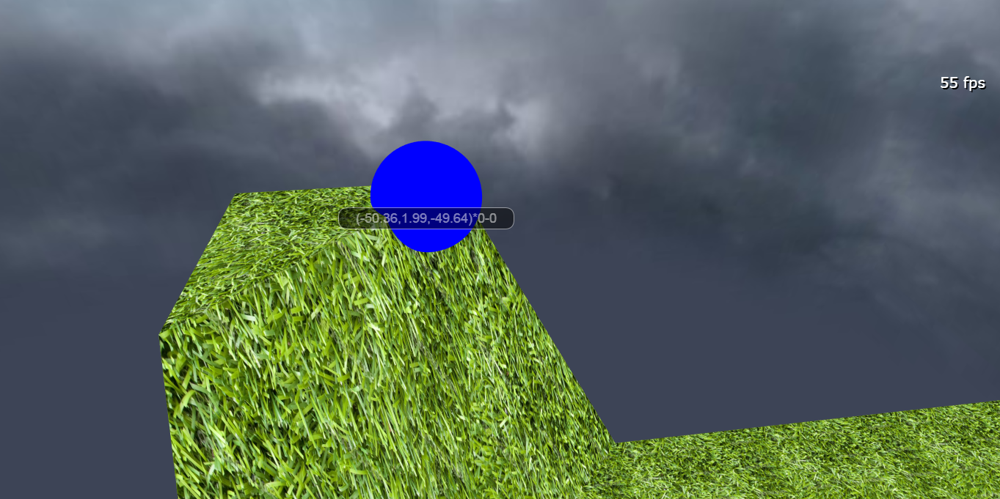
TransVertex方法如下
1 function TransVertex(mesh,arr,matrix)
2 {
3 var len=arr.length;
4 var arr_path=mesh.metadata.arr_path;
5 for(var i=0;i<len;i++)//移动路径数组里的每个顶点
6 {//注意这里操纵的是路径数组而非底层的顶点数据
7 arr_path[arr[i][0]][arr[i][1]]=BABYLON.Vector3.TransformCoordinates(arr_path[arr[i][0]][arr[i][1]],matrix);
8 }
9 mesh=BABYLON.MeshBuilder.CreateRibbon(mesh.name
10 ,{pathArray:arr_path,updatable:true,instance:mesh,closePath:false,closeArray:false,sideOrientation:BABYLON.Mesh.DOUBLESIDE});
11
12 }与方法一的地块抬升类似，这里也需要一些生成“配置数组”和分配变化方式的方法，下面将编写几个简单的此类方法。
2、生成带有随机起伏的圆形山丘
渲染效果如图所示：
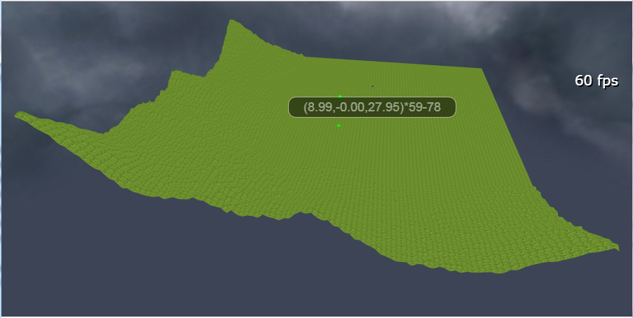
代码实现：
a、选取一定范围内的顶点：
1 //选取区域，将区域条件转为路径索引，这里应该有多种多样的选取方法
2 //选取距某个点一定距离的顶点
3 //FindZoneBYDistance(obj_ground.ground_base,new BABYLON.Vector3(-50,0,-50),45)
4 function FindZoneBYDistance(mesh,pos,distance)
5 {
6 var arr_res=[];
7 var arr_path=mesh.metadata.arr_path;
8 var len=arr_path.length;
9 for(var i=0;i<len;i++)//对于每一条路径
10 {
11 var path=arr_path[i];
12 var len2=path.length;
13 for(var j=0;j<len2;j++)//对于路径上的每一个顶点
14 {
15 var vec=path[j];
16 var length=pos.clone().subtract(vec).length();//取到这个顶点到参数位置的距离
17 if(length<=distance)//如果在参数位置的一定范围内
18 {
19 arr_res.push([i,j,length]);
20 }
21 }
22 }
23 return arr_res;
24 }
25 //只考虑XZ平面上的距离
26 function FindZoneBYDistanceXZ(mesh,pos,distance)
27 {
28 var arr_res=[];
29 var arr_path=mesh.metadata.arr_path;
30 var len=arr_path.length;
31 for(var i=0;i<len;i++)//对于每一条路径
32 {
33 var path=arr_path[i];
34 var len2=path.length;
35 for(var j=0;j<len2;j++)//对于路径上的每一个顶点
36 {
37 var vec=path[j];
38 var vec2=pos.clone().subtract(vec)
39 var length=Math.pow(vec2.x*vec2.x+vec2.z*vec2.z,0.5);//取到这个顶点到参数位置的距离
40 if(length<=(distance))//如果在参数位置的一定范围内
41 {
42 arr_res.push([i,j,length]);
43 }
44 }
45 }
46 return arr_res;
47 }b、用梯度随机法生成起伏不平但又符合大势的山头：
1 //按照一定规则进行矩阵变换：这里应该有多种多样的插值方法
2 //这个是越靠近pos点提高的越多，仿照粒子系统的梯度用法
3 function TransVertexGradiently(mesh,arr,arr_gradient)
4 {
5 var len=arr.length;
6 var len2=arr_gradient.length;
7 var arr_path=mesh.metadata.arr_path;
8 for(var i=0;i<len;i++)//对于每一个要变换的顶点
9 {
10 var matrix=null;
11 var arr2=arr[i];
12 var vec=arr_path[arr2[0]][arr2[1]];//vec并非基础量，但为什么不能直接修改？
13 var dis=arr2[2];
14 if(dis<arr_gradient[0][0])
15 {
16 dis=arr_gradient[0][0];
17 }
18 else if(dis>arr_gradient[len2-1][0])
19 {
20 dis=arr_gradient[len2-1][0];
21 }
22 //接下来遍历梯度数组，规定梯度必是从低到高排列的
23 for(var j=1;j<len2;j++)
24 {
25 var gradient=arr_gradient[j];
26 if(dis<=gradient[0])
27 {//计算这一梯度插值层级
28 //前一个梯度
29 var gradient0=arr_gradient[j-1];
30 //比率
31 var ratio=((dis-gradient0[0])/(gradient[0]-gradient0[0]));
32 //小端
33 var a=gradient0[1]+(gradient[1]-gradient0[1])*ratio;
34 //大端
35 var b=gradient0[2]+(gradient[2]-gradient0[2])*ratio;
36 //在范围内取随机高度
37 var c=b-a;
38 var res=a+c*Math.random();
39 matrix=new BABYLON.Matrix.Translation(0,res,0);
40 break;
41 }
42 }
43 if(matrix)
44 {
45 arr_path[arr2[0]][arr2[1]]=BABYLON.Vector3.TransformCoordinates(arr_path[arr2[0]][arr2[1]],matrix);
46 }
47 }
48 mesh=BABYLON.MeshBuilder.CreateRibbon(mesh.name
49 ,{pathArray:arr_path,updatable:true,instance:mesh,closePath:false,closeArray:false,sideOrientation:BABYLON.Mesh.DOUBLESIDE});
50 }代码中的梯度随机算法可以参考Babylon.js入门教程中关于粒子系统的章节。
实现图中效果所用的命令为：
1 TransVertexGradiently(obj_ground.ground_base,FindZoneBYDistance(obj_ground.ground_base,new BABYLON.Vector3(-50,0,-50),45)
2 ,[[0,29,30],[15,14,15],[30,11,12],[45,0,1]]);
3 TransVertexGradiently(obj_ground.ground_base,FindZoneBYDistance(obj_ground.ground_base,new BABYLON.Vector3(-50,0,50),30)
4 ,[[0,14,15],[15,4,5],[30,0,1]]);
5 TransVertexGradiently(obj_ground.ground_base,FindZoneBYDistance(obj_ground.ground_base,new BABYLON.Vector3(50,0,-50),30)
6 ,[[0,14,15],[15,4,5],[30,0,1]]);
7 TransVertexGradiently(obj_ground.ground_base,FindZoneBYDistance(obj_ground.ground_base,new BABYLON.Vector3(-50,0,0),30)
8 ,[[0,14,15],[15,4,5],[30,0,1]]);
9 TransVertexGradiently(obj_ground.ground_base,FindZoneBYDistance(obj_ground.ground_base,new BABYLON.Vector3(0,0,-50),30)
10 ,[[0,14,15],[15,4,5],[30,0,1]]);你也可以直接把这些命令写在程序的地形初始化部分，这会比运行时注入代码执行更快。
ground_base处理完毕后，我们开始添加地形附着物。
3、贴合丘陵地形的森林和保持水平的湖泊
森林和湖泊的效果如图所示：
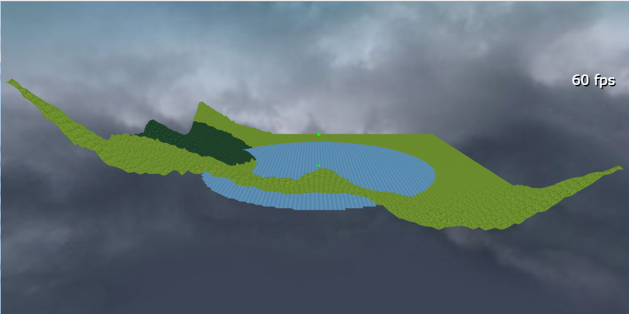
树木随着地势生长，所以表示森林的地形附着物要具备和山丘相同的地形起伏，水面则平滑如镜，无论水下情况如何地形附着物都要保持平整。同时这两种地形附着物还应具有和ground_base同步的纹理重复效果。
代码实现：
1 //关键难点在于如何提取和重组地形网格的顶点、索引、uv，这种贴合纹理也可以用在模型表面绘制上
2 function MakeLandtype1(mesh,arr,mat,name,sameheight,height)
3 {
4 //ground_base的顶点数据
5 var vb=mesh.geometry._vertexBuffers;//地面网格的顶点数据
6 var data_pos=vb.position._buffer._data;//顶点位置数据
7 var data_index=mesh.geometry._indices;//网格索引数据
8 var data_uv=vb.uv._buffer._data;//地面网格的纹理坐标数据
9 var len_index=data_index.length;
10
11 var len=arr.length;
12 var arr_path=mesh.metadata.arr_path;//路径数组
13
14 //要生成的地形附着物的顶点数据
15 var arr_index=[];
16 var data_pos2=[];
17 var data_index2=[];//第二次循环时填充
18 var data_uv2=[];
19 console.log("开始生成地形附着物");
20 //生成顶点数组、纹理坐标数组
21 for(var i=0;i<len;i++){//对于每一个选中的路径节点
22
23 var int0=arr[i][0];
24 var int1=arr[i][1];
25 var vec=arr_path[int0][int1];//获取到路径数组中的一个Vector3对象
26 //这里有两种思路，一是从顶点数据入手，完全复刻地形的高度；二是从条带的路径索引入手，可以更贴近的生成附着物的多边形轮廓，但在高度方面可能不精确（不贴合），
27 //->结合使用二者？《-可以实现但过于复杂
28 //假设路径数组和顶点数据是一一对应的？同时假设每一条路径的长度都和第一条相同，如果先剔除三角形就无法这样使用了！
29 var index_v=int0*arr_path[0].length+int1//这个顶点的索引
30 arr_index.push(index_v);//将ground_base中的每次对应的顶点绘制保存起来
31 data_pos2.push(vec.x);
32 if(sameheight)//如果要求所有顶点等高，则取设定高度
33 {
34 data_pos2.push(height);
35 }
36 else
37 {
38 data_pos2.push(vec.y);
39 }
40 data_pos2.push(vec.z);
41 data_uv2.push(data_uv[index_v*2]);
42 data_uv2.push(data_uv[index_v*2+1]);
43
44 }
45 //生成附着物的索引数组
46 len=arr_index.length;
47 console.log("开始设定地形附着物的索引");
48 for(var i=0;i<len;i++)//对于每个顶点索引，它可能被用到多次
49 {
50 console.log(i+"/"+len);
51 var index_v=arr_index[i];
52 for(var j=0;j<len_index;j+=3)//遍历ground_base的索引数组，找到所有被绘制的顶点
53 {
54 var num2=-1;
55 var num3=-1;
56 //var arr_temp=[];
57 var flag_type=null;
58 if(index_v==data_index[j])//三角形的第一个顶点
59 {//在这里要考虑另两个顶点是否在附着物范围内，如果在，则使用附着物纹理，如果不在则使用混合纹理？？
60 num2=data_index[j+1];//*3;//实际去顶点数组中取顶点时要乘以3，但作为顶点索引时不用乘以3
61 num3=data_index[j+2];
62 flag_type=1;
63 }
64 else if(index_v==data_index[j+1])//三角形的第二个顶点
65 {
66 num2=data_index[j];
67 num3=data_index[j+2];
68 flag_type=2;
69 }
70 else if(index_v==data_index[j+2])//三角形的第三个顶点
71 {
72 num2=data_index[j];
73 num3=data_index[j+1];
74 flag_type=3;
75 }
76 if(num2!=-1&&num3!=-1)
77 {//查看num2和num3这两个索引对应的顶点，在不在选定顶点范围内，如果不在则不在附着物里绘制这个三角形
78 //(其实更好的方案是，如果不在，则绘制地形网格和附着物的混合纹理)
79 var flag2=-1;
80 var flag3=-1;
81 for(var i2=0;i2<len;i2++)
82 {
83 var index2=arr_index[i2];
84 if(index2==num2)
85 {
86 flag2=i2;//在新的顶点数组中找到这个顶点的索引
87 }
88 if(index2==num3)
89 {
90 flag3=i2;
91 }
92 if(flag2!=-1&&flag3!=-1)
93 {
94 break;//都已经找到
95 }
96 }
97 if(flag2!=-1&&flag3!=-1)
98 {//如果这个三角形的三个顶点都属于地形附着物
99 if(flag_type==1)
100 {
101 data_index2.push(i);
102 data_index2.push(flag2);
103 data_index2.push(flag3);
104 }
105 else if(flag_type==2)
106 {
107 data_index2.push(flag2);
108 data_index2.push(i);
109 data_index2.push(flag3);
110 }
111 else if(flag_type==3)
112 {
113 data_index2.push(flag2);
114 data_index2.push(flag3);
115 data_index2.push(i);
116 }
117
118 }
119 }
120 }
121 }
122 //数据整理完毕，开始生成几何体
123 var normals=[];
124 BABYLON.VertexData.ComputeNormals(data_pos2, data_index2, normals);//计算法线
125 BABYLON.VertexData._ComputeSides(0, data_pos2, data_index2, normals, data_uv2);//根据法线分配纹理朝向
126 var vertexData= new BABYLON.VertexData();
127 vertexData.indices = data_index2;//索引
128 vertexData.positions = data_pos2;
129 vertexData.normals = normals;//position改变法线也要改变！！！！
130 vertexData.uvs = data_uv2;
131
132 var mesh=new BABYLON.Mesh(name,scene);
133 vertexData.applyToMesh(mesh, true);
134 mesh.vertexData=vertexData;
135 mesh.renderingGroupId=2;
136 mesh.material=mat;
137 obj_ground[name]=mesh;
138 }提取ground_base的地形时有多种可选的算法，假设ground_base的顶点排布如图所示：
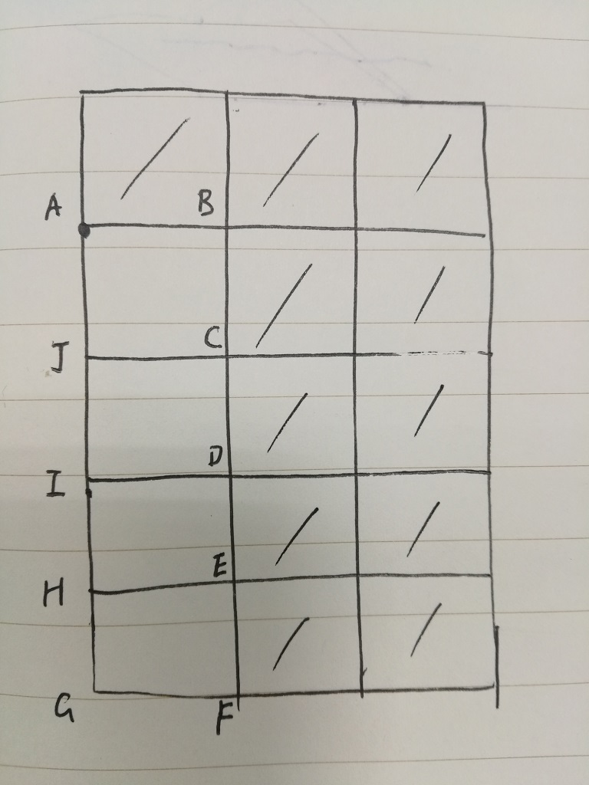
设ABF右上侧包括ABF在内的所有顶点都被选中，则我们可能只提取图中画斜线的单元格，也可能提取ACF右上的所有三角形（比前者多了ABC部分），还可能提取AF右上的所有区域（这时需要添加额外的三角形，假设JIHG与CDEF高度不同，则又要考虑不同的额外三角形生成方式），或者提取所有和ABCDEF相邻的单元格。。。不同的提取方法会产生不同的地形细节效果，这里我选择第二种提取方法。
在处理不同纹理交界处时也存在多种不同的选择，比如基于三角形的实际位置让纹理相互交错，或者在交界处使用混合两种纹理图的过渡纹理等等，这里我简单的保持每种地貌的原本纹理，用后绘制的覆盖先绘制的，用靠近相机的遮挡远离相机的。
生成上图的命令如下：
1 MakeLandtype1(obj_ground.ground_base,FindZoneBYDistanceXZ(obj_ground.ground_base,new BABYLON.Vector3(-50,0,10),30)
2 ,mat_tree,"ground_tree1");
3 MakeLandtype1(obj_ground.ground_base,FindZoneBYDistanceXZ(obj_ground.ground_base,new BABYLON.Vector3(0,0,0),35)
4 ,mat_shallowwater,"ground_shallowwater1",true,0);
4、向地形中导入预制的模型生成剧烈变化的地形
向场景中加入了一个“坠毁的宇宙飞船”模型：
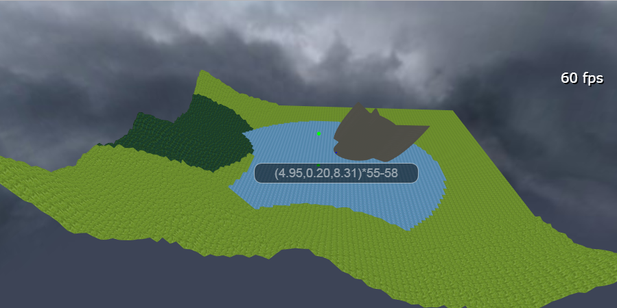
从下面看：（左边只显示森林纹理并不是因为草地三角形不存在，而是因为网格位置和渲染组都相同时，后绘制的三角形会覆盖先绘制的三角形）
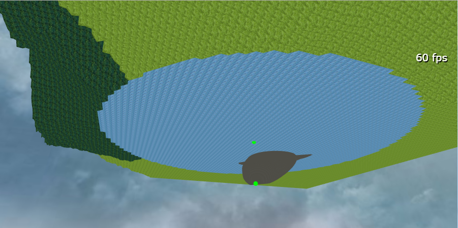
使用单纯的地面网格是难以生成图中的反斜面地形的。
导入Babylon格式模型的代码如下：
1 //如果这里load一个相同内容的txt文件，会报警告，但似乎也成功导入了！！
2 function ImportMesh(objname,filepath,filename,obj_p)
3 {
4 BABYLON.SceneLoader.ImportMesh(objname, filepath, filename, scene
5 , function (newMeshes, particleSystems, skeletons)
6 {//载入完成的回调函数
7 var mesh=newMeshes[0];
8 mesh.position=obj_p.position;
9 mesh.rotation=obj_p.rotation;
10 mesh.scaling=obj_p.scaling;
11 mesh.name=obj_p.name;
12 mesh.id=obj_p.name;
13 var mat=obj_p.material.clone();
14 mat.backFaceCulling=false;
15 mat.name=obj_p.material.name;
16 mesh.material=mat;
17 mesh.renderingGroupId=2;
18 mesh.sideOrientation=BABYLON.Mesh.DOUBLESIDE;
19 obj_ground[obj_p.name]=mesh;
20 }
21 );
22 }调用命令如下：
1 ImportMesh("","../../ASSETS/SCENE/","SpaceCraft.babylon"
2 ,{position:new BABYLON.Vector3(10,-2,10),rotation:new BABYLON.Vector3(0,-Math.PI/4,Math.PI/6)
3 ,scaling:new BABYLON.Vector3(1,1,1),name:"ground_spacecraft"
4 ,material:mat_stone});5、保存地面编辑进度
你可能想在做完一些操作后将当前的场景保存起来以备再次载入。
a、存档代码如下：
1 //导出正在编辑的地面工程，其中地面网格保持metadata属性，下载文本时参考xlsx的方式
2 function ExportObjGround()
3 {
4 var obj_scene=MakeBasicBabylon();//建立一个基础场景所需的全部属性
5 for(key in obj_ground)//在Babylon文件中不配置材质，在导入后能否自动对应新场景中的材质id?-》可以，但是会报警告
6 {
7 var obj_mesh={};
8 var mesh=obj_ground[key];
9 obj_mesh.name=mesh.name;
10 obj_mesh.id=mesh.id;
11 obj_mesh.materialId=mesh.material.name;
12 obj_mesh.position=[mesh.position.x,mesh.position.y,mesh.position.z];
13 obj_mesh.rotation=[mesh.rotation.x,mesh.rotation.y,mesh.rotation.z];
14 obj_mesh.scaling=[mesh.scaling.x,mesh.scaling.y,mesh.scaling.z];
15 obj_mesh.isVisible=true;
16 obj_mesh.isEnabled=true;
17 obj_mesh.checkCollisions=false;
18 obj_mesh.billboardMode=0;
19 obj_mesh.receiveShadows=true;
20 obj_mesh.renderingGroupId=mesh.renderingGroupId;
21 obj_mesh.metadata=mesh.metadata;
22 obj_mesh.sideOrientation=mesh.sideOrientation;
23 if(mesh.geometry)//是有实体的网格
24 {
25 var vb=mesh.geometry._vertexBuffers;
26 obj_mesh.positions=BuffertoArray2(vb.position._buffer._data);
27 obj_mesh.normals=BuffertoArray2(vb.normal._buffer._data);
28 obj_mesh.uvs= BuffertoArray2(vb.uv._buffer._data);
29 obj_mesh.indices=BuffertoArray2(mesh.geometry._indices);
30 obj_mesh.subMeshes=[{
31 'materialIndex': 0,
32 'verticesStart': 0,
33 'verticesCount': mesh.geometry._totalVertices,
34 'indexStart': 0,
35 'indexCount': mesh.geometry._indices.length,
36 }];
37 obj_mesh.parentId=mesh.parent?mesh.parent.id:null;
38 }
39 else//非实体网格
40 {
41 obj_mesh.positions=[];
42 obj_mesh.normals=[];
43 obj_mesh.uvs=[];
44 obj_mesh.indices=[];
45 obj_mesh.subMeshes=[{
46 'materialIndex': 0,
47 'verticesStart': 0,
48 'verticesCount': 0,
49 'indexStart': 0,
50 'indexCount': 0
51 }];
52 obj_mesh.parentId=null;
53 }
54 obj_scene.meshes.push(obj_mesh);
55 }
56 var str_data=JSON.stringify(obj_scene);
57 //试试看行不行-》行
58 var tmpDown = new Blob([s2ab(str_data)]
59 ,{
60 type: ""
61 }
62 );
63 saveAs(tmpDown,"ObjGround.babylon")
64 }其中MakeBasicBabylon方法保存了一个最基础的场景对象所需的数据：
1 //建立一个最基础的Babylon对象结构
2 function MakeBasicBabylon()
3 {
4 var obj_scene=
5 {//最简场景对象
6 'autoClear': true,
7 'clearColor': [0,0,0],
8 'ambientColor': [0,0,0],
9 'gravity': [0,-9.81,0],
10 'cameras':[],
11 'activeCamera': null,
12 'lights':[],
13 'materials':[],
14 'geometries': {},
15 'meshes': [],
16 'multiMaterials': [],
17 'shadowGenerators': [],
18 'skeletons': [],
19 'sounds': []//,
20 //'metadata':{'walkabilityMatrix':[]}
21 };
22 return obj_scene;
23 }BuffertoArray2是一个将buffer型数据转为数组的方法：
1 function BuffertoArray2(arr)
2 {
3 var arr2=[];
4 var len=arr.length;
5 for(var i=0;i<len;i++)
6 {
7 arr2.push(arr[i]);
8 }
9 return arr2;
10 }保存Babylon模型文件时使用了 https://www.jianshu.com/p/9a465d7d1448博客介绍的文件导出方法：
1 function s2ab(s) {
2 if (typeof ArrayBuffer !== 'undefined') {
3 var buf = new ArrayBuffer(s.length);
4 var view = new Uint8Array(buf);
5 for (var i = 0; i != s.length; ++i) view[i] = s.charCodeAt(i) & 0xFF;
6 return buf;
7 } else {
8 var buf = new Array(s.length);
9 for (var i = 0; i != s.length; ++i) buf[i] = s.charCodeAt(i) & 0xFF;
10 return buf;
11 }
12 }
13 saveAs=function(obj, fileName)
14 {
15 var tmpa = document.createElement("a");
16 tmpa.download = fileName || "下载";
17 tmpa.href = URL.createObjectURL(obj);
18 tmpa.click();
19 setTimeout(function () {
20 URL.revokeObjectURL(obj);
21 }, 100);
22 };
6、小结：
以上内容可以访问https://ljzc002.github.io/EmptyTalk/HTML/TEST/testframe3.html进行测试
在之前研究基于编程的模型编辑器时（ https://www.cnblogs.com/ljzc002/p/9353101.html，https://www.cnblogs.com/ljzc002/p/9473438.html ），如何在自定义的模型上绘制纹理一直是一个难题，曾经在更早期的编辑器Demo（https://www.cnblogs.com/ljzc002/p/6884252.html）中尝试过用选择三角形设置图素，之后按照图素生成图片的方式绘制纹理图，但也只能作为原理解释Demo而难以实用。这里编写的贴合表面的附着物算法在稍加修改后将可以解决在一个模型上绘制多种纹理的难题。当然，这种“纹理附着物”的方法会在一个模型中建立多个网格，并且在网格相互覆盖的地方产生一些多余的三角形，在后文中我将尝试用“降雨法”剔除这些多余的三角形。（事实上剔除多余三角形后渲染速度并没有提升很多。。。）
三、
使用降雨法剔除被遮挡的三角形
1、首先导入我们之前保存的存档，执行以下命令导入之前做好的一个存档：
ImportObjGround("../../ASSETS/SCENE/","ObjGround.babylon",webGLStart3);
ImportObjGround方法代码如下：
1 function ImportObjGround(filepath,filename,func)
2 {
3 BABYLON.SceneLoader.ImportMesh("", filepath, filename, scene
4 , function (newMeshes, particleSystems, skeletons)
5 {//载入完成的回调函数
6 var len=newMeshes.length;
7 for(var i=0;i<len;i++)
8 {
9 var mesh=newMeshes[i];
10 mesh.renderingGroupId=2;
11 mesh.sideOrientation=BABYLON.Mesh.DOUBLESIDE;
12 obj_ground[mesh.name]=mesh;
13 if(mesh.name=="ground_base")
14 {//声明顶点位置是可变的！！
15 mesh.markVerticesDataAsUpdatable(BABYLON.VertexBuffer.PositionKind//其实就是“position”，除此之外还有“normal”等
16 ,true);
17 }
18 if(mesh.metadata&&mesh.metadata.arr_path)
19 {//要把array重新变成Vector3！！！！
20 var arr_path=mesh.metadata.arr_path;
21 var len1=arr_path.length;
22 for(var j=0;j<len1;j++)
23 {
24 var path=arr_path[j];
25 var len2=path.length;
26 for(var k=0;k<len2;k++)
27 {
28 var vec=path[k];
29 var vec2=new BABYLON.Vector3(vec.x,vec.y,vec.z);
30 path[k]=vec2;
31 }
32 }
33 }
34 }
35 func();//导入完成后执行
36 }
37 );
38 }这里要注意的是，导入模型后网格的updatable属性会自动变为false，这时需要使用markVerticesDataAsUpdatable方法重新激活网格的更新能力。同时Babylon.js的Vector3对象在转为JSON字符串时，会自动的退化为JavaScript的Object对象，我们在载入时需要重新将它转为Vector3。
2、准备下雨
降雨算法并不复杂，思路是从相机可能的观察方向发出密集的射线，如果射线击中某一三角形，则把三角形的三个顶点“淋湿”（所有淋湿的顶点组成“淋湿数组”），在降雨完成后，剔除掉没有淋湿的顶点及对应顶点索引，使模型得到简化。
与传统的网格融合方法相比，降雨法不会在网格的接口处生成大量不受控的三角形；与传统网格简化方法相比，则不会丢弃可见的三角形细节；缺点则是计算耗时较长（也许可以优化？）
首先准备下雨：
1 function PrepareRain()
2 {
3 console.log("准备下雨");
4 mesh_DropFrom=new BABYLON.Mesh("mesh_DropFrom",scene);
5 for(var key in obj_ground)
6 {
7 var mesh=obj_ground[key];
8 var obj={};
9 obj.vb=mesh.geometry._vertexBuffers;//地面网格的顶点数据
10 obj.data_pos=obj.vb.position._buffer._data;//顶点位置数据
11 obj.data_index=mesh.geometry._indices;//网格索引数据
12 obj.data_uv=obj.vb.uv._buffer._data;//地面网格的纹理坐标数据
13 obj.len_index=obj.data_index.length;
14 obj.len_pos=obj.data_pos.length/3;
15 obj.data_wet=[];//每个顶点是否被淋湿
16 for(var i=0;i<obj.len_pos;i+=1)
17 {
18 obj.data_wet.push(0);
19 }
20 obj.arr_index=[];
21 obj.data_pos2=[];
22 obj.data_index2=[];//第二次循环时填充
23 obj.data_uv2=[];
24 obj_wet[key]=obj;
25 }
26 console.log("准备完毕");
27 }
28 function PrepareRain2()
29 {
30 console.log("读取本地淋湿数组");
31 mesh_DropFrom=new BABYLON.Mesh("mesh_DropFrom",scene);
32 for(var key in obj_ground)
33 {
34 var mesh=obj_ground[key];
35 var obj={};
36 obj.vb=mesh.geometry._vertexBuffers;//地面网格的顶点数据
37 obj.data_pos=obj.vb.position._buffer._data;//顶点位置数据
38 obj.data_index=mesh.geometry._indices;//网格索引数据
39 obj.data_uv=obj.vb.uv._buffer._data;//地面网格的纹理坐标数据
40 obj.len_index=obj.data_index.length;
41 obj.len_pos=obj.data_pos.length/3;
42 obj.data_wet=localStorage.getItem(key);//每个顶点是否被淋湿
43 obj.arr_index=[];
44 obj_wet[key]=obj;
45 }
46 console.log("准备完毕");
47 }第一个方法提取出了降雨所需的地面对象中的每个网格的数据，其中obj.data_wet是一个长度与顶点数组相同的的全零数组，0表示没有淋湿。第二个方法，则从浏览器的本地存储中读取已经算好的淋湿数组，用预先算好的数据节省下雨所需的时间。mesh_DropFrom网格则是后面降雨所用到的参照物网格。
3、开始下雨（这时一个非常耗时的计算）
1 //宽度分段、深度分段、每块尺寸（在这个尺寸内有四条射线）,“射线”长度,所有射线出发点的中心
2 //DropRain(100,100,1,100,new BABYLON.Vector3(0,50,0),new BABYLON.Vector3(0,0,0))
3 //DropRain(200,200,0.5,100,new BABYLON.Vector3(0,50,0),new BABYLON.Vector3(0,0,0))
4 function DropRain(count_x,count_z,size,length,from,to)
5 {
6 mesh_DropFrom.position=from;
7 mesh_DropFrom.lookAt(to);//这时网格的WorldMatrix和AbsoulutPosition还未改变！！
8 //其实应该是网格的负Y方向指向to！！！！这个矩阵的最终效果应该是x，y，z左移一位
9 mesh_DropFrom.computeWorldMatrix();
10 var matrix=mesh_DropFrom.getWorldMatrix();//取参考网格的世界矩阵
11 var size41=size/4;
12 var direction=to.subtract(from);//雨丝在世界坐标系中的方向
13 //遍历101*101个方块，降雨角度不同时设计不同的分段数
14 console.log("开始下雨");
15 for(var i=0;i<=count_x;i++)
16 {
17 for(var j=0;j<=count_z;j++)
18 {
19 console.log(i+"/"+count_x+"_"+j+"/"+count_z);
20 var arr_wet=[];
21 var pos0=new BABYLON.Vector3((j-(count_z/2))*size,(i-(count_x/2))*size,0);//预先右移一位？
22 //左上，右上，右下，左下
23 //建立四条射线，局部坐标系中的变换
24 var pos1=BABYLON.Vector3.TransformCoordinates(pos0.clone().add(new BABYLON.Vector3(size41,-size41,0)),matrix);
25 var pos2=BABYLON.Vector3.TransformCoordinates(pos0.clone().add(new BABYLON.Vector3(size41,size41,0)),matrix);
26 var pos3=BABYLON.Vector3.TransformCoordinates(pos0.clone().add(new BABYLON.Vector3(-size41,size41,0)),matrix);
27 var pos4=BABYLON.Vector3.TransformCoordinates(pos0.clone().add(new BABYLON.Vector3(-size41,-size41,0)),matrix);
28 //var ray=new BABYLON.Ray(new BABYLON.Vector3(-50,50,0), new BABYLON.Vector3(0,-1,0), 100);
29 var ray1 = new BABYLON.Ray(pos1, direction, length);
30 var ray2 = new BABYLON.Ray(pos2, direction, length);
31 var ray3 = new BABYLON.Ray(pos3, direction, length);
32 var ray4 = new BABYLON.Ray(pos4, direction, length);
33 //对于每一束射线，如果击中的第一个网格不是"ground_alpha",则只淋湿第一个网格
34 // ，否则还如此检查第二个，四条射线的检查结果都放在同一数组中
35 //，击中了处于相同位置的ground_base和其他ground，优先选拔其他ground
36 testRay(ray1,size);//检查射线淋湿的网格
37 testRay(ray2,size);
38 testRay(ray3,size);
39 testRay(ray4,size);
40 }
41 }
42 //为了节省时间，把淋湿数组保存在本地存储里
43 for(key in obj_wet)
44 {
45 localStorage.setItem(key,obj_wet[key].data_wet);
46 }
47 console.log("降雨结束");
48 }考虑到可能斜着下雨，我们使用矩阵变换调整每一条雨丝的起点和方向，在mesh_DropFrom的局部坐标系中，每条雨丝的降雨起点都像地块单元格一样平整的排列，用lookAt方法将mesh_DropFrom倾斜一些则所有雨丝也跟着倾斜了。这里要注意的是lookAt方法默认将mesh_DropFrom的“正面”指向目标（to），而我们需要的则是将mesh_DropFrom的“下面”指向目标，这一差异会使得最终世界坐标系中的的坐标左移一位，也就是（x,y,z）变成了（y,z,x）,所以我们在mesh_DropFrom的局部坐标系内计算时就预先将坐标右移一位。
降雨的示意图：
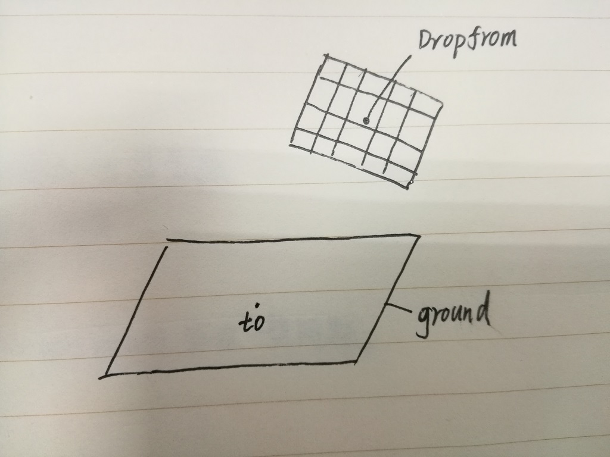
从每个mesh_DropFrom的“单元格”中射出四条射线，使用testRay方法判断这些射线与地面网格的接触情况：
1 function sort_compare(a,b)
2 {
3 return a.distance-b.distance;
4 }
5 function testRay(ray,size)
6 {
7 var arr=scene.multiPickWithRay(ray,predicate);//射线的多重选取，这样获取的arr并不是按distance顺序排序的！！！！
8 var len=arr.length;
9 arr.sort(sort_compare)//按距离从近到远排序
10 var lastHit=null;
11 for(var k=0;k<len;k++)//对于这条射线击中的每个三角形
12 {
13 var hit=arr[k];
14 var mesh=hit.pickedMesh;
15 var distance=hit.distance;
16 if(mesh)
17 {
18 if(lastHit)//已经有上一层
19 {//如果上一层是半透明的，则下一层必定被淋湿，如果上一层是ground_base，则要看两层之间的距离
20 if(lastHit.pickedMesh.name.substr(0,11)=="ground_base")
21 {
22 if((distance-lastHit.distance)>(size/1000))//如果距离太大，则不会淋湿
23 {
24 getWet(lastHit);
25 }
26 else//如果距离较近，则优先淋湿地形附着物
27 {
28 getWet(hit);
29 }
30 }
31 }
32 else//没有上一层
33 {
34 if(mesh.name.substr(0,11)!="ground_base")//如果是地面网格，则还不确定是否淋湿，其他网格必定淋湿
35 {
36 getWet(hit);
37 }
38 else if(k==(len-1))//已经遍历到最后一层
39 {
40 getWet(hit);
41 }
42 }
43 var name=mesh.name;
44 if(name&&(name.substr(0,12)=="ground_alpha"||name.substr(0,11)=="ground_base"))
45 {
46 lastHit=hit;
47 }
48 else
49 {
50 lastHit=null;
51 break;//如果上一层就是其他类型的网格，则不再继续深入检测
52 }
53 }
54 else
55 {
56 lastHit=null;
57 break;
58 }
59 }
60 }这里将可能出现的地形网格分为三类：半透明地形网格(以ground_alpha为前缀)，基础地形网格（以ground_base为前缀），地形附着物网格（以ground为前缀），规定半透明网格不会阻挡雨水，附着物网格和基础网格距离较近时附着物网格优先淋湿。
确定会淋湿后，用getWet方法将三角形的顶点放入淋湿数组：
1 function getWet(hit)
2 {
3 var mesh=hit.pickedMesh;
4 var name=mesh.name;
5 var faceId=hit.faceId;
6 var indices = mesh.getIndices();
7 var index0 = indices[faceId * 3];
8 var index1 = indices[faceId * 3 + 1];
9 var index2 = indices[faceId * 3 + 2];
10 var wet=obj_wet[name];//这个顶点被淋湿
11 wet.data_wet[index0]=1;
12 wet.data_wet[index1]=1;
13 wet.data_wet[index2]=1;
14 }4、根据淋湿数组剔除三角形：（这是一个更加耗时的计算）
1 function SpliceRain(obj_ground)//通过改变数据结构，可以只测试其中的一个网格
2 {
3 for(var key in obj_ground)
4 {
5 console.log("清理"+key);
6 var obj=obj_wet[key];
7 var len=obj.len_pos;
8 var data_wet=obj.data_wet;//淋湿数组，长度是顶点数组的三分之一
9 var data_pos=obj.data_pos;//顶点数组
10 var data_index=obj.data_index//顶点索引
11 var data_uv=obj.data_uv//纹理坐标
12 //var count_splice=0;
13 for(var i=0;i<data_wet.length;i++)//对于每一个顶点,这里一定要注意顺序
14 {//如果这个顶点没有被淋湿，则要清除这个顶点，如果不清除顶点只是清除索引，能不能快一些？
15 console.log(i+"/"+data_wet.length);
16 if(!data_wet[i])//如果没有淋湿
17 {
18 data_pos.splice(i*3,3);
19 data_uv.splice(i*2,2);
20 data_wet.splice(i,1);
21
22 //count_splice++;
23 var len2=obj.len_index;
24 for(var j=0;j<obj.len_index;j++)
25 {
26 if(data_index[j]>i)//如果这个索引值大于被剔除的顶点
27 {
28 data_index[j]-=1;//count_splice;
29 }
30 else if(data_index[j]==i)//如果这个索引正是被剔除的顶点
31 {
32 var int_temp=j%3;
33 if(int_temp==0)//三角形的第一个顶点
34 {
35 data_index.splice(j,3);
36 j-=1;
37 }
38 else if(int_temp==1)//三角形的第二个顶点
39 {
40 data_index.splice(j-1,3);
41 j-=2;
42 }
43 else if(int_temp==2)//三角形的第三个顶点
44 {
45 data_index.splice(j-2,3);
46 j-=3;
47 }
48 }
49 }
50 i--;
51 }
52 }
53 //剔除之后开始生成网格
54 var normals=[];
55 BABYLON.VertexData.ComputeNormals(data_pos, data_index, normals);//计算法线
56 BABYLON.VertexData._ComputeSides(0, data_pos, data_index, normals, data_uv);//根据法线分配纹理朝向
57 var vertexData= new BABYLON.VertexData();
58 vertexData.indices = data_index;//索引
59 vertexData.positions = data_pos;
60 vertexData.normals = normals;//position改变法线也要改变！！！！
61 vertexData.uvs = data_uv;
62
63 var mesh=obj_ground[key];
64 var mat=mesh.material;
65 var pos=mesh.position;
66 var rot=mesh.rotation;
67 var scal=mesh.scaling;
68 mesh.dispose();
69 mesh=new BABYLON.Mesh(key,scene);
70 //mesh
71 //mesh=new BABYLON.Mesh(name,scene);
72 vertexData.applyToMesh(mesh, true);
73 mesh.vertexData=vertexData;
74 mesh.sideOrientation=BABYLON.Mesh.DOUBLESIDE;
75 mesh.renderingGroupId=2;
76 mesh.material=mat;
77 mesh.position=pos;
78 mesh.rotation=rot;
79 mesh.scaling=scal;
80 obj_ground[key]=mesh;
81 }
82 }这里需要从顶点数组和顶点索引数组中剔除未淋湿的顶点，同时要根据顶点数目的变化减小顶点索引数组中所有超过剔除顶点的值。其他的计算和生成地形附着物相似。
剔除之后的渲染效果如图所示：
较稀疏的雨丝：（DropRain(100,100,1,100,new BABYLON.Vector3(0,50,0),new BABYLON.Vector3(0,0,0))）
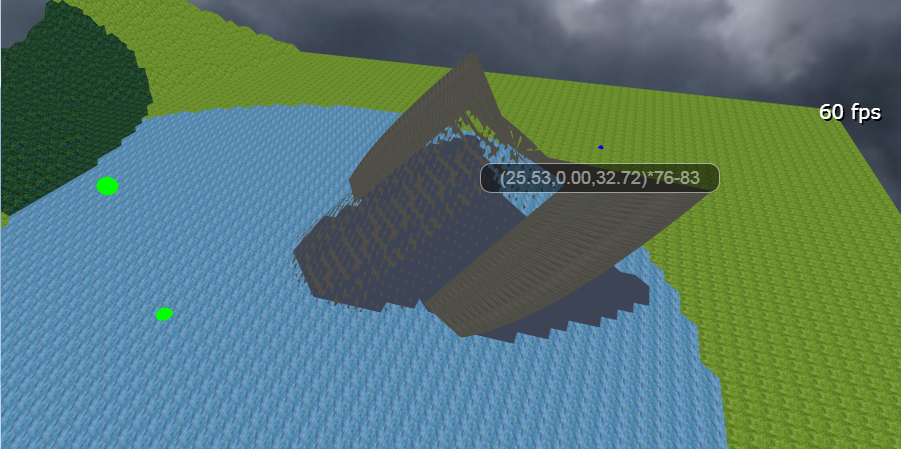
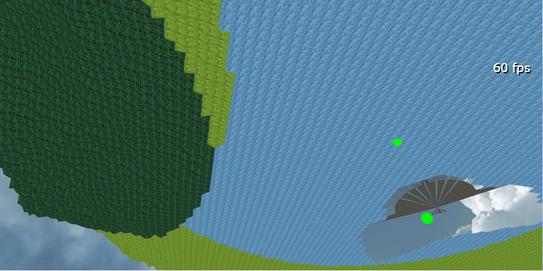
可以看到，没有被淋湿的浅水三角形被剔除了，另一方面因为飞船的网格比雨丝更密集，很多网格没有被淋湿。
较密集的雨丝：（DropRain(200,200,0.5,100,new BABYLON.Vector3(0,50,0),new BABYLON.Vector3(0,0,0))）
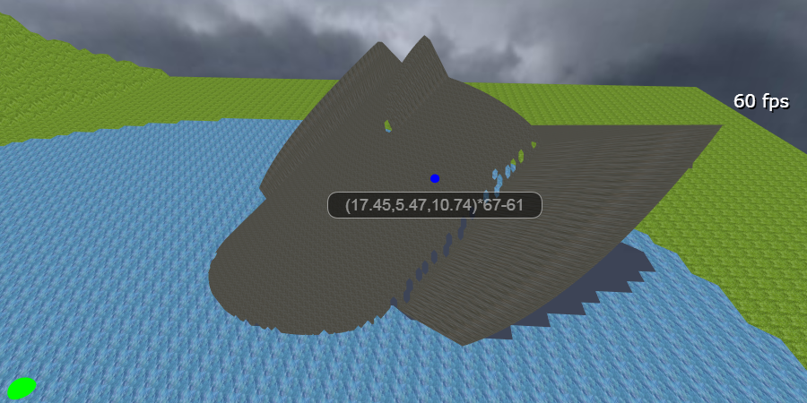
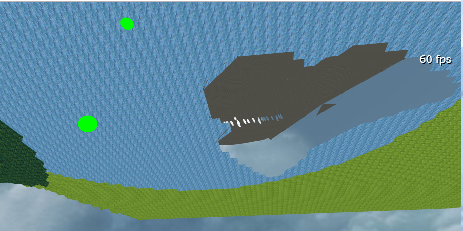
可以看到模型中还存在一些空洞，再添加一些其他方向的小规模降雨即可解决。
除了这种类似“方向光”的降雨方法外，还可以根据实际需要编写其他的降雨方式，比如参考“点光源”从一个点向周围发出射线，也可以使用一些边界判断方法直接剔除一定范围内的所有顶点（边界判断方法可以参考 https://www.cnblogs.com/ljzc002/p/10168547.html）
总结：
地基已经搭好，接下来可以向场景中添加各种角色并进行互动了。